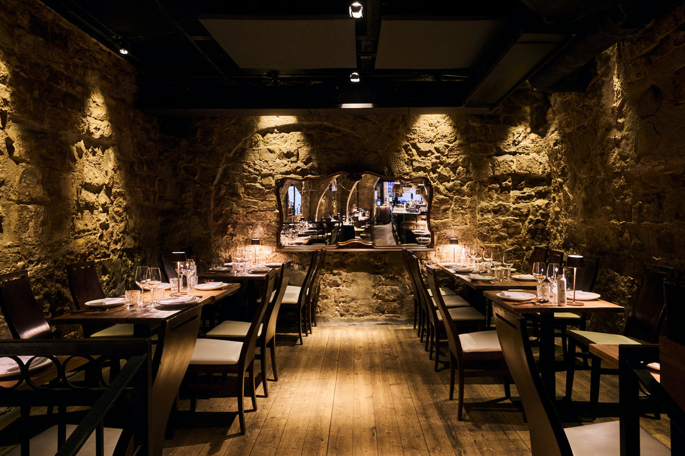

THE SPIRIT OF ARCANO
Some places
have a story.
This one whispers.
Beneath the arches of a 17th-century stable, a different kind of evening takes shape.
In the heart of El Born, medieval roots meet contemporary Mediterranean cuisine. A place to gather around the table, discover something unexpected, and let conversation set the pace.
Find your atmosphere
A table. A conversation. No hurry.THE ART OF STAYING A LITTLE LONGER